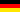

 Deutsch
Marktext ist eine einfache semantische
Auszeichnungssprache für die Herstellung von Unicode
Texten. Marktext wurde für Menschen entwickelt, die
Text leicht mit einem schlichten Text-Editor
eingeben, und dann ebenso einfach in seiner rohen
Form lesen.
English
Marktext is a semantic lightweight markup
language for making up Unicode text. Marktext is
designed to be easy for a human to enter with a
simple text editor, and easy to read in its raw form.
日本語
マルクテクストは、ユニコード・テキストを入力するためのセマンティック軽量マークアップ言語である。マルクテクストは、単純なテキストエディタを使って入力する人間のために簡単で、その生の形式で読みやすいように設計されている。